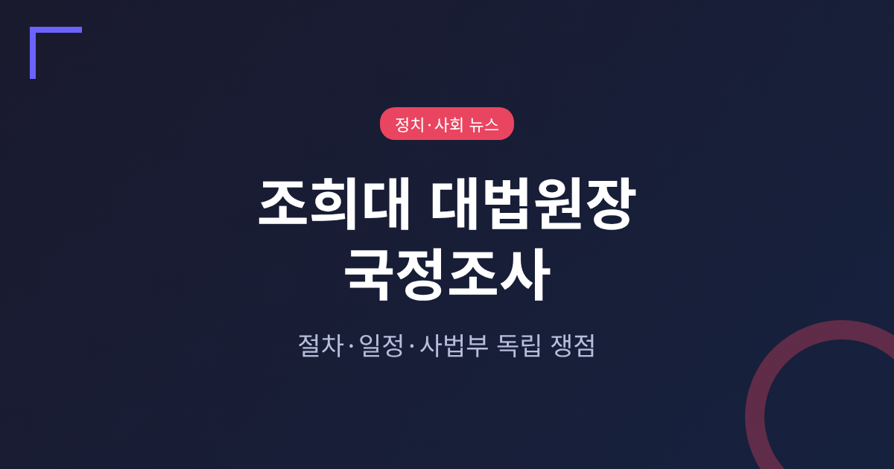
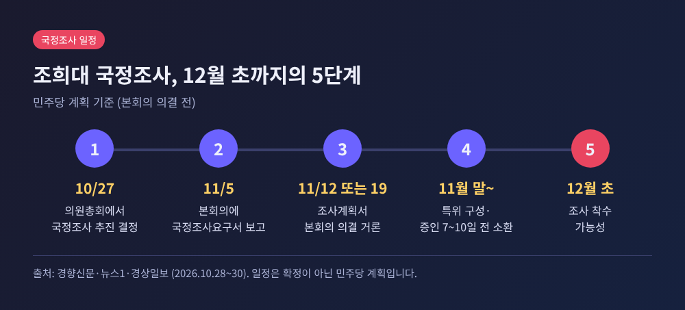
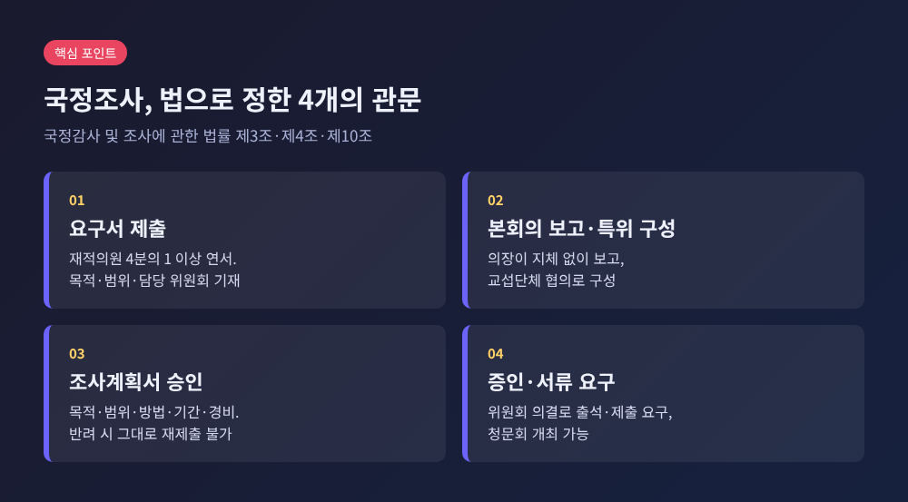
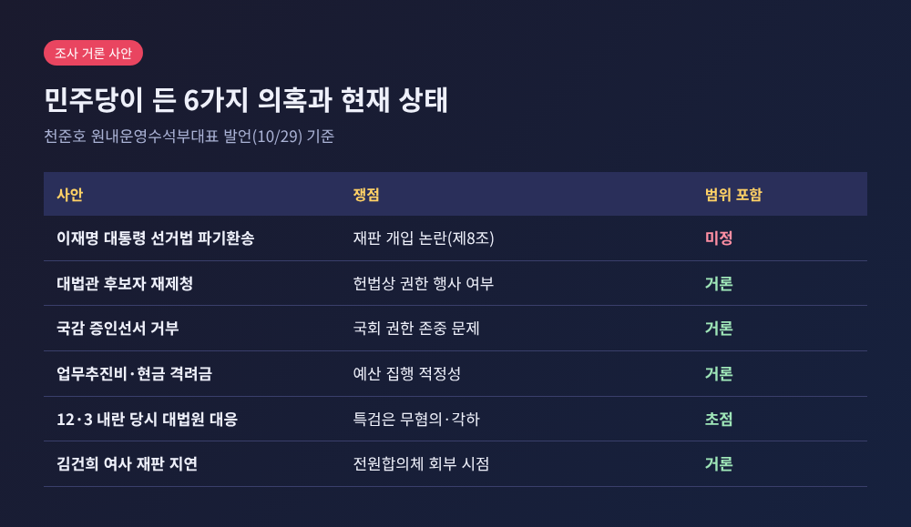
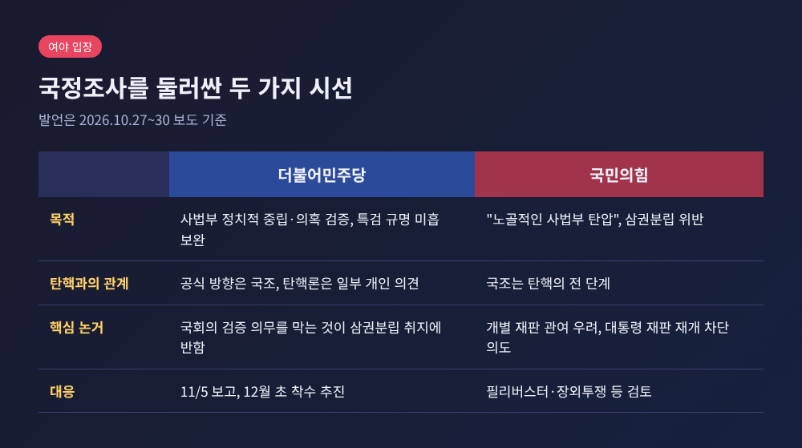
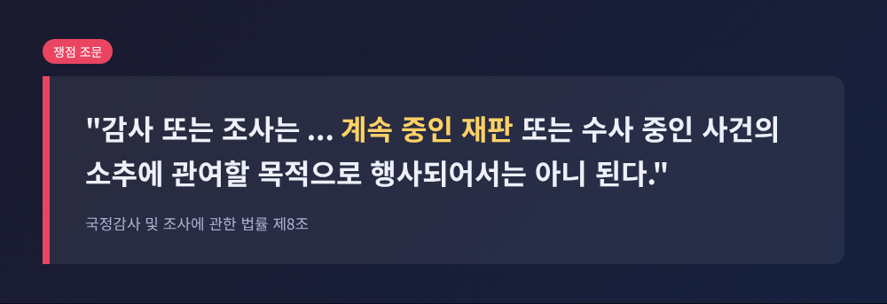

3줄 요약
이번 글에서는 조희대 대법원장 국정조사가 어떤 절차와 일정으로 진행되는지 정리해 보겠습니다. 여야가 각각 무엇을 근거로 맞서는지, 사법부 독립 논란의 핵심은 어디에 있는지도 함께 살펴봅니다. 김건희 여사 구속 연장 소식이 이어진 직후의 정국 흐름이라는 점만 배경으로 두겠습니다.
민주당은 10월 27일 의원총회에서 조희대 대법원장에 대한 국정조사를 추진하기로 뜻을 모았습니다. 같은 날 대법원은 김건희 여사의 구속 기간을 올해 말까지 2개월 연장했습니다.
이튿날 한병도 원내대표는 추가 구속영장이 발부됐다고 해서 판단을 구속 만료 임박까지 미뤄 온 사법부의 책임이 사라지지는 않는다는 취지로 말했습니다. 박성준 수석대변인은 최고위원회의 뒤 일정을 설명했습니다. 11월 5일 요구서를 본회의에 보고하고, 1~2주 안에 조사계획서를 채택한 뒤, 준비를 거쳐 12월 초 조사에 들어간다는 구상입니다.
30일에는 조사의 초점이 구체화됐습니다. 박 수석대변인은 "12월 3일 내란 당시 조희대의 행위"를 다시 짚어야 한다고 밝혔습니다.

대법원장을 대상으로 한 국정조사는 실시된 전례가 없습니다. 2018년 양승태 전 대법원장 시기 사법행정권 남용 의혹 때 논의가 있었고, 지난해에도 조 대법원장 관련 요구서가 제출됐지만 실제 조사로 이어지지는 않았습니다.
입법부가 사법부 수장을 정면으로 조사 대상에 올리는 일입니다. 결과에 따라 삼권분립의 선을 어디에 긋느냐는 선례가 만들어질 수 있습니다. 여기에 이재명 대통령의 공직선거법 사건 파기환송, 김건희 여사 재판 지연 의혹이 얽혀 있어 정치적 무게도 큽니다.
「국정감사 및 조사에 관한 법률」 제3조에 따르면 재적의원 4분의 1 이상이 요구하면 특별위원회나 상임위원회가 국정의 특정 사안을 조사할 수 있습니다. 요구서에는 조사 목적, 범위, 담당 위원회를 적어 연서로 제출합니다.
의장은 요구서를 지체 없이 본회의에 보고하고, 교섭단체 대표와 협의해 특위를 구성합니다. 이후 조사위원회가 목적·범위·방법·기간·소요경비를 담은 조사계획서를 본회의에 내 승인을 받아야 합니다. 반려된 계획서는 그대로 다시 낼 수 없습니다.
민주당이 말하는 11월 5일은 요구서 보고일입니다. 계획서 의결은 11월 12일 또는 19일이 거론됩니다. 증인은 보통 7~10일 전에 소환해야 하므로, 실제 조사는 12월 초가 될 것이라는 설명입니다. 다만 이 일정은 어디까지나 민주당의 계획이고, 본회의 의결은 아직 이뤄지지 않았습니다.

천준호 원내운영수석부대표는 29일 정책조정회의에서 의혹 여섯 가지를 열거했습니다.
다만 범위는 확정되지 않았습니다. 김성회 원내대변인은 파기환송 과정을 포함할지 논의하겠지만 정해진 것은 없다고 밝혔습니다. 당 안에서도 신중론이 있습니다. 한 의원은 조 대법원장이 내란에 가담했다면 특검에서 무언가 나왔을 것이라며 범위를 좁혀야 한다고 말했고, 정성호 의원은 과거 국정조사가 용두사미로 끝난 전례를 들었습니다.
조 대법원장은 지난 6일 국정감사에서 입장을 밝힌 바 있습니다. 대법관 재제청은 신속한 임명을 위해 자진 협력한 것이며 헌법상 문제가 없다고 했고, 계엄사의 인원 파견 요청은 위헌적이라 보아 보내지 말라고 지시했다고 설명했습니다. 1억 원이 넘는 와인 구매 의혹에는 술을 마시지 않았다고 하면서도 송구하다고 답했습니다. 내란특검은 지난해 12월 이 건을 무혐의로, 종합특검은 각하로 처리했습니다.

민주당의 논리는 이렇습니다. 두 특검 모두 압수수색이나 대면조사 없이 서면 질의에 그쳐 규명이 미흡했고, 사법부가 정치적 중립을 지켰는지 국회가 검증해야 한다는 것입니다. 한병도 원내대표는 국회의 검증 의무를 막는 것이 삼권분립 취지에 반한다며, 야당을 향해 "꼼수 보복"이라는 딱지로 진실 규명을 막지 말라고 했습니다.
국민의힘의 논리는 정반대입니다. 정점식 원내대표는 "탄핵보다 비열하고 악질적"이라며 "노골적인 사법부 탄압이고 명백한 삼권분립 위반"이라고 규정했습니다. 장동혁 대표는 국정조사를 탄핵의 전 단계로 보고, 조 대법원장의 직무를 정지시켜 법관 인사에 관여하지 못하게 하려는 의도라고 주장했습니다. 조사계획서가 본회의에 오르면 필리버스터와 장외투쟁까지 검토한다는 방침입니다.
흥미로운 대목은 민주당 안의 온도 차입니다. 이성윤 최고위원은 "한시라도 빨리" 탄핵에 착수하자고 했고, 서영교 법사위원장은 국정조사와 탄핵의 병행에 공감했습니다. 조국혁신당도 동시 추진을 요구했습니다. 반면 당 관계자는 이런 의견이 개인 차원이며 당은 국정조사 쪽으로 가고 있다고 선을 그었습니다. 개혁신당은 위법이 있다면 탄핵소추로 헌법재판소 판단을 받으라는 입장입니다.

쟁점은 법 제8조로 모입니다. 조문은 조사가 "계속 중인 재판 또는 수사 중인 사건의 소추에 관여할 목적으로 행사되어서는 아니 된다"고 정하고 있습니다. 이재명 대통령의 파기환송심은 현재 재판부 결정으로 진행이 중단된 상태이므로, 파기환송 과정을 조사에 넣으면 논란이 불거질 수 있다는 지적이 나옵니다.
법조계의 시각은 갈립니다. 일부 판사와 학계는 개별 판결을 이유로 대법원장에게 책임을 묻는 일이 재판 독립을 해칠 수 있다고 봅니다. 변호사단체 '착한법 만드는 사람들'은 판결에 대한 정치권의 불만이 조사로 이어지면 법관이 법리보다 정치적 파장을 먼저 고려할 수 있다고 우려했습니다.
한편 사법부라는 이유로 검증에서 완전히 빠져서는 안 된다는 견해도 있습니다. 한 변호사는 개별 판결을 문제 삼지 않는다면 예산 집행의 적정성을 따지는 일은 가능하다고 보았습니다. 업무추진비 의혹은 조사 사유가 될 수 있다는 학계의 의견도 같은 결입니다. 결국 어디까지가 사법행정 검증이고 어디부터가 재판 개입이냐는 선 긋기의 문제입니다.

첫째 변수는 조사 범위입니다. 계획서에 개별 재판이 들어가면 제8조 공방과 법원 일각의 권한쟁의심판 청구 거론이 현실이 될 수 있습니다. 범위를 사법행정으로 좁히면 논란은 줄겠지만 민주당 강경파의 요구와는 멀어집니다.
둘째는 출석 문제입니다. 지난해 5월과 9월 청문회에서 조 대법원장과 대법관 증인들은 삼권분립 훼손을 이유로 나오지 않았습니다. 이번에도 응하지 않으면 핵심 당사자 없이 진행될 가능성이 큽니다. 법조계에서는 조 대법원장이 압박에도 입장을 바꾸지 않을 것이라는 관측이 우세하다고 전해집니다.
셋째는 탄핵으로 이어지느냐입니다. 국민의힘은 국정조사를 탄핵의 사전 작업으로 봅니다. 연말이나 내년 초 탄핵 추진을 점치는 전망도 있으나, 공식 계획으로 확인된 것은 아닙니다. 11월 5일 본회의 보고 이후의 계획서 협상과 국민의힘의 저항 수위가 다음 분기점이 될 것입니다.
정리하면 이렇습니다. 일정은 11월 5일, 11월 12일 또는 19일, 12월 초로 이어지는 민주당 계획이 있을 뿐, 어느 것도 아직 확정되지 않았습니다. 한쪽은 검증이라 하고 다른 쪽은 탄압이라 부르는 사이에서, 독자께서 지켜보실 지점은 조사 범위가 어디까지 정해지는가입니다.
국회의 검증 권한과 재판의 독립, 둘 중 하나를 고르는 문제가 아니라 둘 사이의 선을 합의할 수 있느냐의 문제라고 생각합니다.